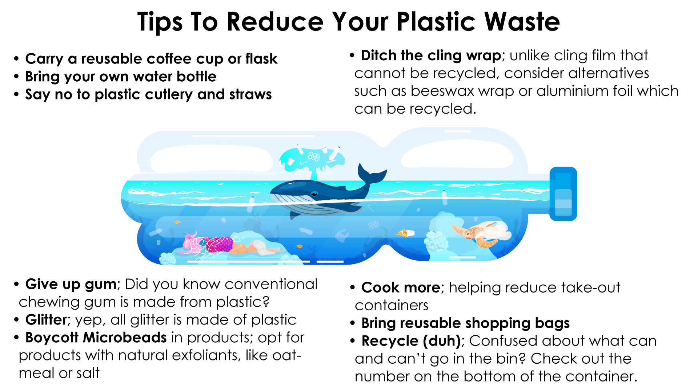

Join The Fight Against Plastic Pollution!
Organizations like, The Ocean Cleanup© are trying their best to combat the current plastic pollution in our oceans; but if we don't change our current attitude and behavior towards plastic usage and waste, they're fighting a endless battle. Change starts at the source and small steps can have a big impact.
Start Simple. Don't overwelm yourself to change your whole lifestyle in one night. If you don't know where to start, try making one small change and committing to it.
For the specifics on recycling in your area, check out Earth911.org’srecycling directory
What About Our Industries? Can We Create A Circular Economy For Plastic?
What is a circular economy and how does it work?
To create a circular economy for plastic we must take three actions: Eliminate, Innovate, Circulate
-Eliminate all problematic and unnecessary plastic items
-Innovate to ensure that the plastics we do need are reusable, recyclable, or compostable.
-Circulate all the plastic items we use to keep them in the economy and out of the environment
Full Articles: